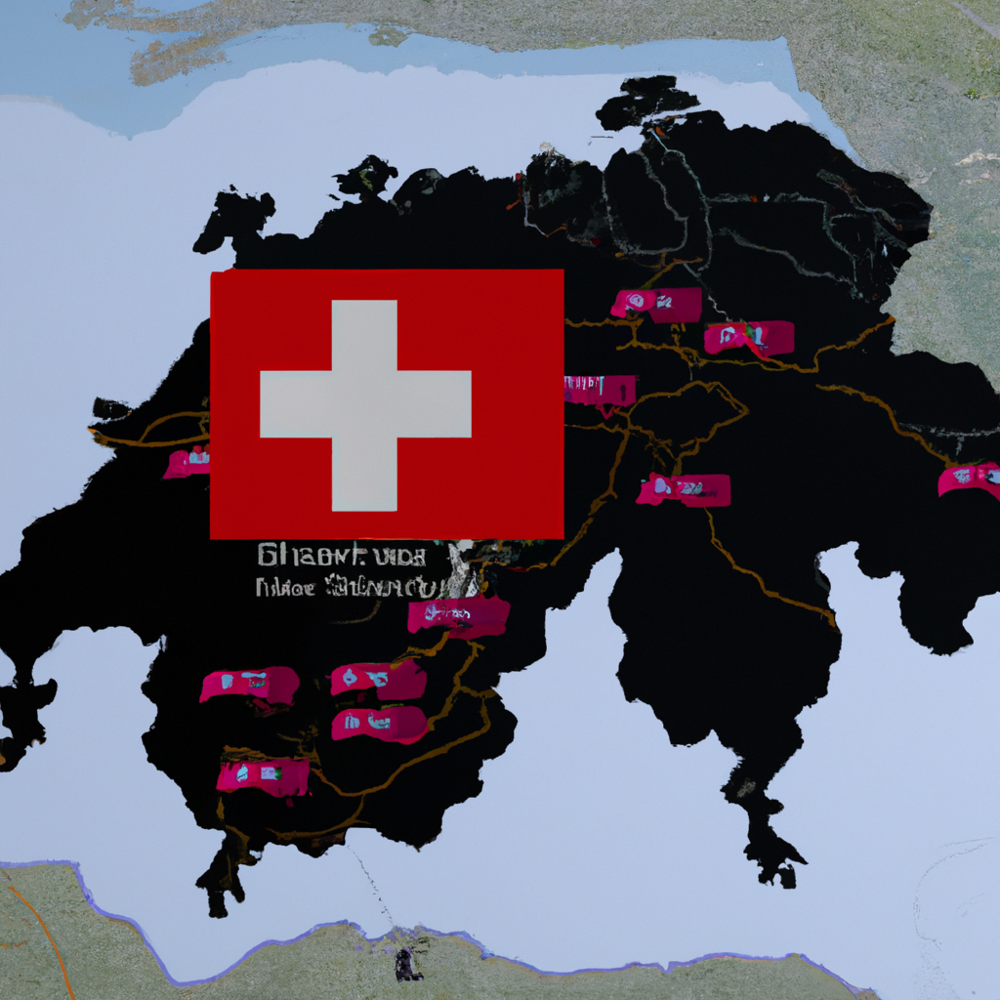

War in switzerland in 2023
The world was rocked on May 1st, 2023, when news broke of a war in Switzerland. With tension running high, many were left wondering what could have caused such a conflict. As a war reporter on the front line, I can tell you that it all started with fear.
The fear of the unknown had been spreading like wildfire throughout the country. People were worried that a conflict was inevitable, and sadly, they were right. In an effort to stop the spread of fear, military forces from all sides began to mobilize.
The war itself was brutal and swift. One day the country was peaceful, the next it was a battlefield. The death toll quickly rose and the destruction of property was extensive. Even though the war was short-lived, the fear it caused will be felt for years to come.
The war in Switzerland was a warning for us all. We must never let fear control us, and we must always be prepared for the worst. As a war reporter, I can assure you that the truth of this conflict will never be forgotten.